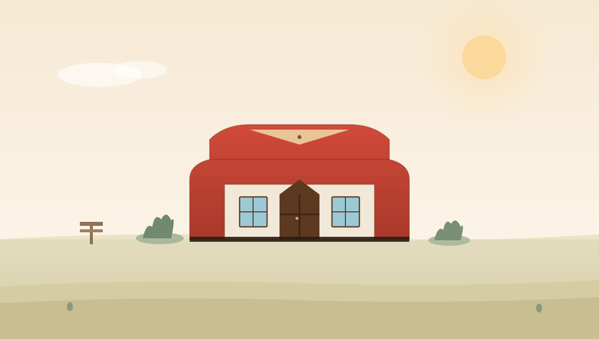
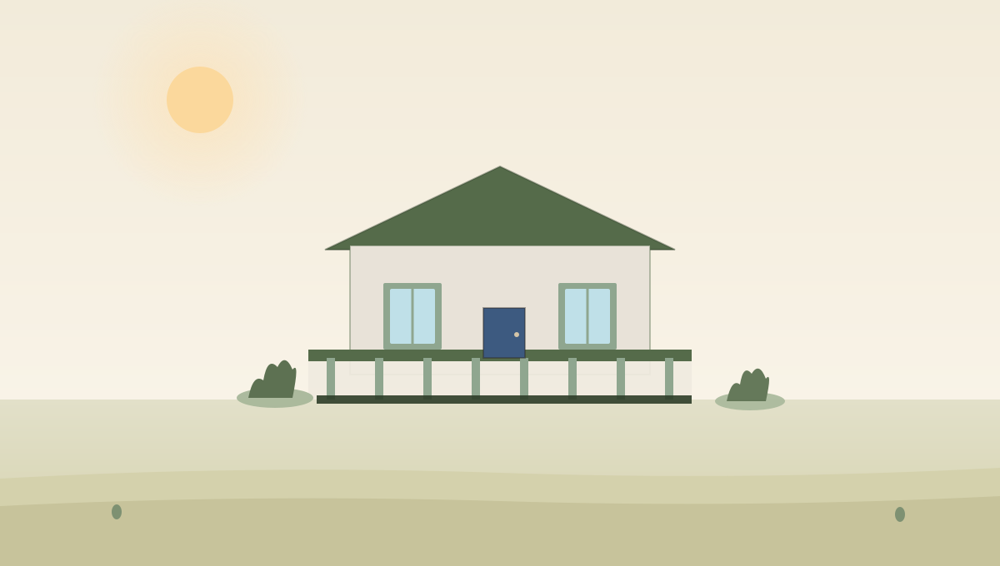
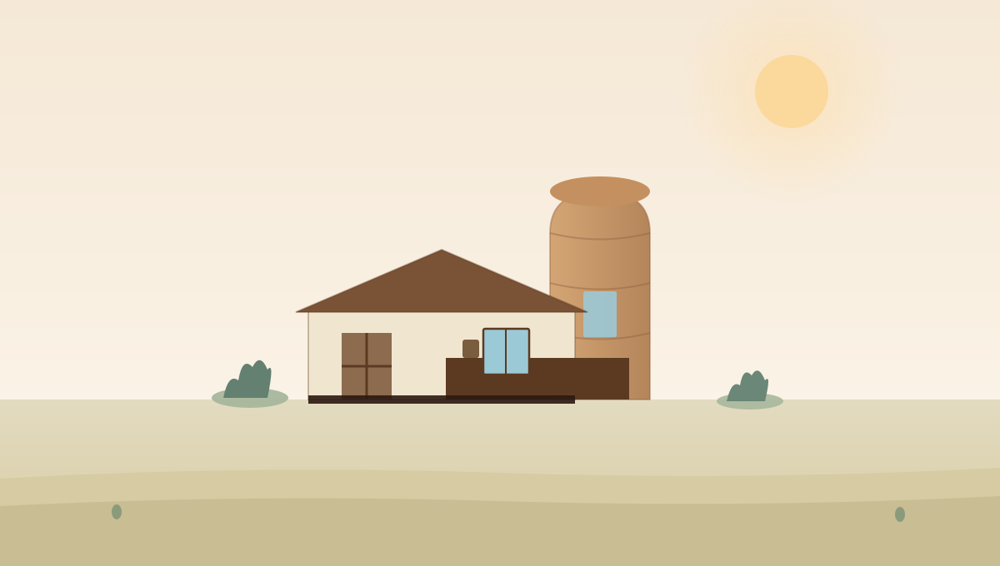

Farm Paralives House Builds
Every Paralives build guide in this category centers on wraparound porches, barn-style gable roofs, and rustic Paralives color schemes. These layouts tend to run larger than our cozy builds, so expect more steps and a bigger furniture list overall.

AdvancedWraparound Porch Farmhouse
A two-story farm build with a full wraparound porch and barn-style gable roof.

IntermediateConverted Barn House
An open-plan layout inside a tall barn-style shell, with exposed beam detailing.

AdvancedSilo Tower Farmhouse
A curved silo-inspired tower built using no-grid placement, attached to a wide farmhouse base.
Orchard Edge Cabin
A simple one-story farm cabin with a small front porch and mudroom entry.
Grain Loft Farmhouse
A double-height loft space inspired by grain storage buildings, with a steep barn roof.
Stable-to-House Conversion
A long, low-roofed layout inspired by horse stables, repurposed into a family home.
Harvest Porch Starter Farm
A compact farmhouse with a deep front porch, ideal for a first farm-style Paralives build.
Gambrel Roof Family Farmhouse
A classic gambrel roofline over a wide two-story footprint with a wraparound porch.
Creekside Farmhouse Build
A raised-foundation farmhouse with a side porch and a curved entry path.
Prefer a smaller or sleeker build?
For tighter footprints and warmer interiors, browse the cozy cottage builds. If you want sharp lines and curved feature walls instead, the modern build category covers no-grid techniques in detail. Pair any farmhouse build above with the Paralives color scheme guide for matching wood and trim tones.